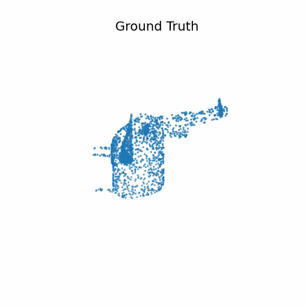
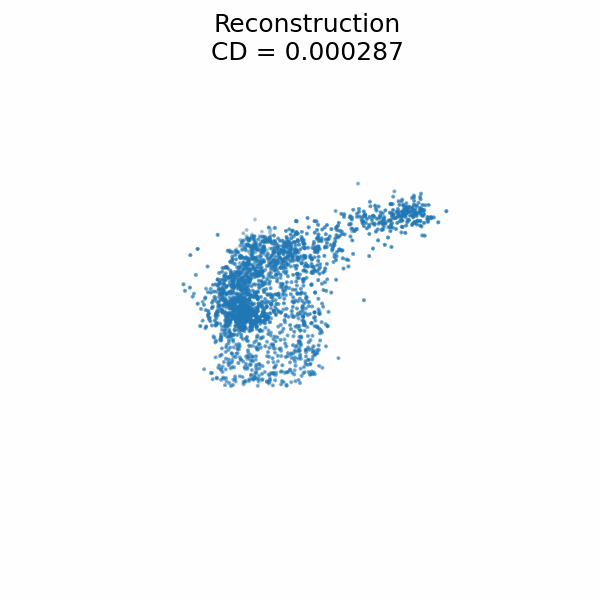
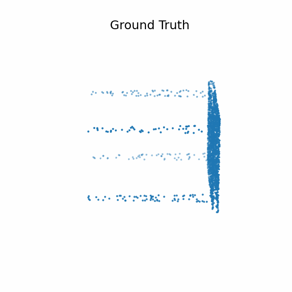
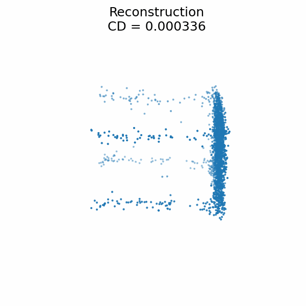
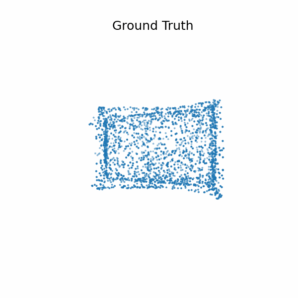
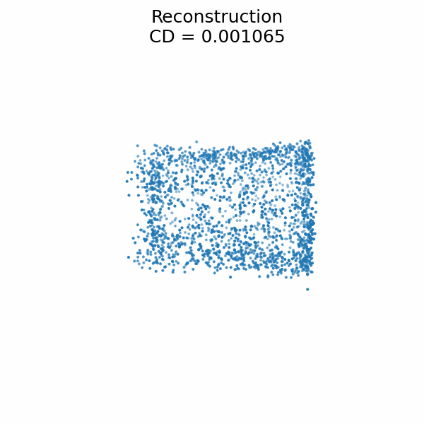
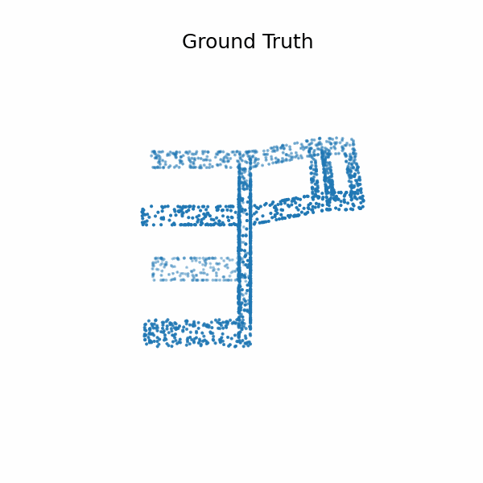
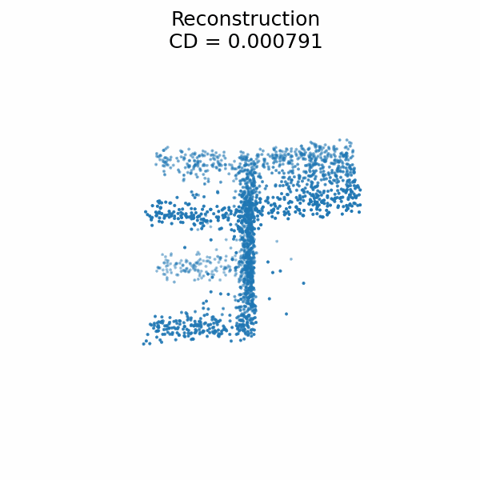

重建过程
重建过程
About
项目简介
本项目复现并探索 3D Shape Tokenization 与 Flow Matching 在点云上的建模与生成能力， 内容覆盖背景知识、实验报告与复现指南，并提供可视化。
点云表征与 Tokenization：构建紧凑离散表示，支撑下游生成与重建。
Latent Flow Matching：在潜空间进行稳定的连续时间建模与采样。
可复现实验：提供从环境、数据到训练/评测的完整流程。


原图

重建

原图

重建

原图

重建

原图

重建